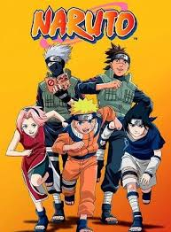

Anime - Naruto
Naruto é uma série de mangá escrita e ilustrada por Masashi Kishimoto, que conta a história de Naruto Uzumaki, um jovem ninja que constantemente procura por reconhecimento e sonha em se tornar Hokage, o ninja líder de sua vila.
A série gira em torno das aventuras vividas por Naruto Uzumaki, um jovem órfão habitante da Aldeia da Folha que sonha em se tornar o quinto Hokage, o maior guerreiro e governante da vila. Ao se graduar como ninja, Naruto descobre que tem um demônio raposa selado dentro de si.
O mundo Naruto é semelhante ao Japão feudal em vários aspectos; esses países mantêm o equilíbrio entre si através de nada além de poder. Tratados são periodicamente assinados, mas eles geralmente não valem mais do que o papel em que estão escritas.
Naruto é conhecido por seu vasto mundo de ninjas, com uma grande variedade de personagens cativantes, cada um com habilidades únicas e histórias de fundo interessantes.
A série principal de Naruto foi seguida por uma sequência chamada "Naruto Shippuden", que continua a jornada de Naruto e seus amigos após um salto temporal de dois anos. Além disso, há também várias outras mídias relacionadas, incluindo filmes, séries spin-off, jogos de vídeo game e uma continuação direta chamada "Boruto: Naruto Next Generations", que acompanha as aventuras do filho de Naruto, Boruto Uzumaki.
